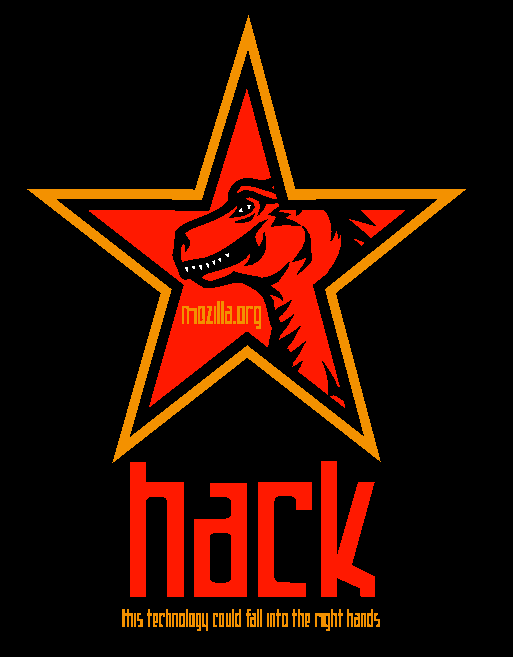

Contents
Mozilla History: 20+ Years And Counting
The following slides are available in this presentation:
Mozilla History: 20+ Years And Counting
An overview a decades-old project
Slides: https://slides.kairo.at/fosdem2021/
- Created for a presentation in the Mozilla Developer Room at FOSDEM 2021 in Brussels.
- Written in HTML 5 (with modern CSS and JS).
- Navigation via links on all slides, via access keys (e.g. "n"/Alt+Shift+N for "next") or back/forward arrow keys
- Contents
 01/2020 Robert Kaiser -
"Mozilla", "Firefox" and related marks/logos are
trademarks
of Mozilla Foundation.
01/2020 Robert Kaiser -
"Mozilla", "Firefox" and related marks/logos are
trademarks
of Mozilla Foundation.
Robert Kaiser - KaiRo

- kairo@kairo.at / home.kairo.at
- Mozilla Rep, Tech Speaker
- Based in Vienna, Austria
- Not on most major social networks
- But on Matrix, Diaspora*, Mozilla Community, Telegram, LinkedIn, KaiRo-at at GitHub
Origin of the Name "Mozilla"
Mozilla Project Launch

- Jan 1998: Netscape announces open-sourcing of code
- Using Mozilla project name, mozilla.org
- Red dino mascot (by Shepard Fairy)
- tag line "hack - this technology could fall into the right hands"
- Target: Internet Application Suite code as base for Netscape 5+
- Open-source code launch on March 31, 1998
- Code Rush documentary